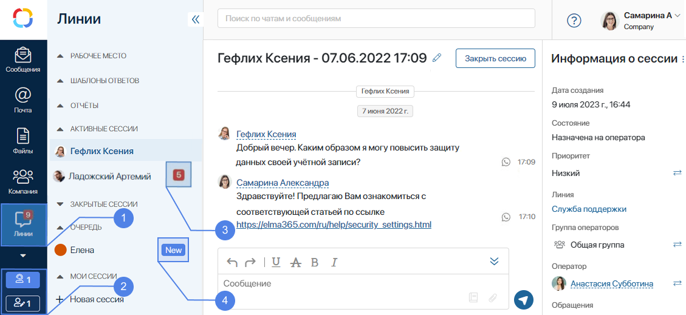
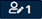
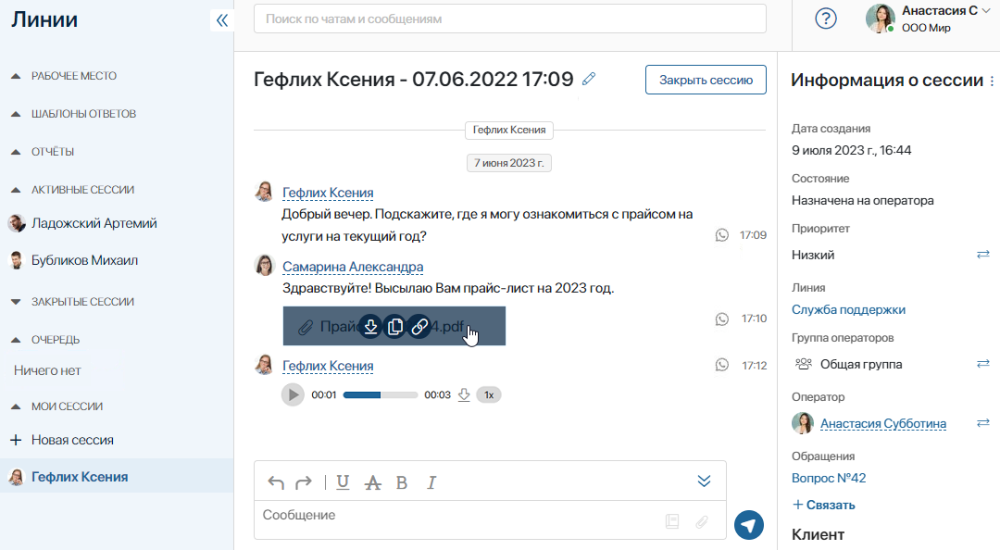
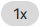
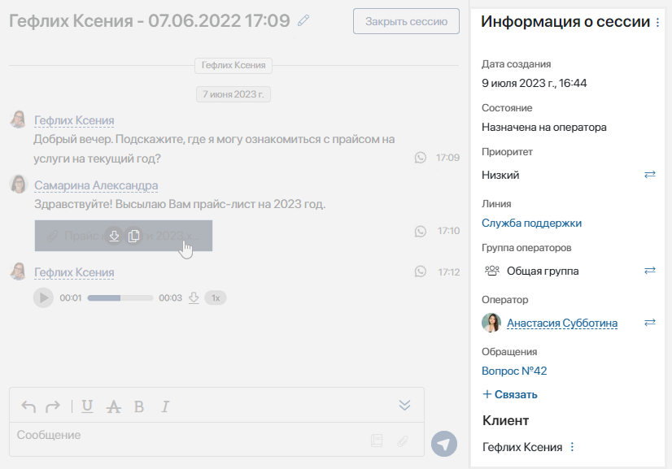
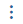
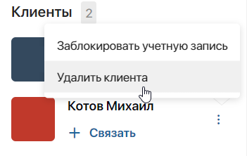

Когда кто-то пишет на линию, всем операторам этой линии приходит оповещение, а в левом нижнем углу главной страницы появляются счётчики новых обращений.

- Счётчик на названии раздела показывает оператору или супервизору с правами оператора количество сессий, назначенных на него, где есть непрочитанные сообщения.
- Счётчики внизу экрана отображают количество неназначенных сессий в очереди во всех линиях, за которые ответственен сотрудник:
- — виден только операторам;
-  — доступен супервизорам.
При активированном решении ELMA365 Service пользователи, включённые в группу Администраторы, могут скрыть счётчики нераспределённых сессий.
- Число рядом с названием сессии обозначает количество непрочитанных сообщений в этой сессии.
- Значок New ставится напротив неназначенной сессии в общем списке сессий.
В общих настройках линий администраторы системы могут включить звуковые сигналы для операторов при поступлении нового обращения.
Страница сессии
Чтобы взять сессию в работу, первый освободившийся оператор может нажать на синий счётчик в левом нижнем углу страницы. Откроется страница с чатом. Сессия при этом будет автоматически назначена на текущего оператора.
Также оператор может выбрать сессию из группы Очередь, перейти на страницу чата и на верхней панели нажать кнопку Взять в работу.
Обратите внимание, при активированном решении ELMA365 Service операторы со статусом Офлайн могут только просматривать сессии. Чтобы обработать обращение или изменить параметры сессии, оператору нужно установить статус Онлайн. Подробнее об этом читайте в статье «Статус оператора».

Страница сессии разделена на три части:
- в меню слева расположены приложения Сессии, Черный список и SLA, справочники Шаблоны ответов, страница Отчёт, а также все доступные пользователю сессии, разделённые на группы. Подробнее об этом читайте в статье «Как организована работа в линиях»;
- в центре страницы размещено диалоговое окно для общения с пользователем;
- на боковой панели справа можно посмотреть информацию о сессии.
Диалоговое окно
В диалоговом окне оператор ведёт переписку с пользователем. Если пользователь обратился из мессенджера, справа от его сообщений будет отображаться значок мессенджера.
Для оператора доступны следующие действия:
- При нажатии на сообщение правой кнопкой мыши можно:
- скопировать текст сообщения;
- процитировать сообщение в своём ответе. Нажав на цитату, можно перейти к изначальному сообщению. Цитирование доступно для всех каналов, кроме ViberBot;
- отредактировать своё сообщение и заменить отправленный файл в сессиях:
- внутренней линии для пользователей ELMA365;
- из канала LiveChat. При подключении канала администратор также может разрешить обратившимся пользователям изменять свои сообщения;
- из канала Telegram или TelegramBot в течение 48 часов с момента отправки сообщения;
Опции изменения сообщения и удаления файла отображаются в активной сессии, если в компании подключено решение ELMA365 Service, и редактирование разрешено в общих настройках линий.
- При наведении курсора на прикреплённый к сообщению файл можно:
- — загрузить файл на компьютер;
 — сохранить копию файла в выбранной папке раздела Файлы;
— сохранить копию файла в выбранной папке раздела Файлы; — скопировать ссылку на загрузку файла;
— скопировать ссылку на загрузку файла;- открыть файл в режиме просмотра, нажав на синюю область вокруг файла.
- В окне чата можно взаимодействовать с голосовыми сообщениями, которые присылает пользователь:
- прослушать сообщение с помощью кнопки ;
- загрузить сообщение на компьютер, нажав ;
- изменить скорость воспроизведения голосового сообщения с помощью кнопки .
- Доступно переименование сессии. Для этого вверху страницы нажмите значок
 и введите новое название.
и введите новое название. - Внизу страницы расположено поле для ввода ответа оператора, в котором можно:
- отправлять текстовые сообщения, прикреплять файлы, а также использовать готовые шаблоны ответов, нажав значок
 ;
; - с помощью значка открыть меню встроенного HTML-редактора и отформатировать введённый текст.
- При закрытии страницы сессии неотправленное сообщение сохранится в поле для ввода.
- Когда переписка с клиентом закончена, нажмите кнопку Закрыть сессию. Супервизор и все операторы линии получат оповещение в #ленту. Сессия станет неактивной, но история переписки сохранится в системе и будет показана в чате при следующем обращении этого клиента.
Кроме того, с лицензией ELMA365 Service администратор системы может управлять доступными комбинациями клавиш для отправки сообщений, а также включить отображение окна подтверждения перед отправкой. Подробнее читайте в статье «Общие настройки линий».
Контролировать процесс обработки обращений помогают:
- Системные уведомления в чате сессии, позволяющие отслеживать историю работы над обращением. Они доступны только в интерфейсе ELMA365 и не отправляются клиенту.
- Оповещения о ходе обработки сессии, настроенные по умолчанию. Например, о взятии в работу, переназначении, закрытии и т. д.
- Пользовательские уведомления. Это могут быть оповещения о разных событиях, происходящих в рамках бизнес-процессов. Например, о переименовании сессии, изменении её приоритета или смене статуса заявки, связанной с сессией. Такие уведомления настраивает администратор системы с помощью скрипта. Подробнее читайте в статье «Настроить автоматический запуск бизнес‑процесса».
Информация о сессии
На правой боковой панели страницы сессии выводится основная информация о сессии и обратившемся клиенте:

- В правом верхнем углу расположен значок , который позволяет сотрудникам в статусе Онлайн выполнять следующие действия с сессией:
- Перевести на бота — опция отображается при активированном решении ELMA365 Service, если к линии подключён чат‑бот. С её помощью оператор может перевести сессию на бота, например, при окончании рабочего дня. В таком случае запрос клиента продолжит обрабатываться ботом по настроенным в нём сценариям. Чтобы перевести сессию снова на сотрудника или группу операторов, в поле Оператор или Группа операторов необходимо нажать кнопку
 и выбрать пользователя или группу. В #ленту оператора или группы сотрудников придёт оповещение о переназначении сессии;
и выбрать пользователя или группу. В #ленту оператора или группы сотрудников придёт оповещение о переназначении сессии; - Запустить бизнес-процесс — в ходе беседы оператор может запустить экземпляр любого настроенного бизнес-процесса из диалога с пользователем, например, при получении от клиента какой‑либо заявки. В таком случае оператор узнаёт у клиента необходимые данные и запускает процесс обработки заявки. Входные параметры для полей бизнес-процесса при этом указывать не нужно. Подробнее об этом читайте в статье «Запустить бизнес‑процесс из сессии вручную»;
- Пометить как спам — при выборе этой опции сессия перестанет отображаться в общем списке, распределяться правилами маршрутизации, учитываться в отчётах и влиять на автоматический запуск бизнес-процессов.
Обратите внимание, просмотреть список заблокированных сессий могут только сотрудники, которым администратор системы предоставил доступ к приложению Сессии;
- Убрать из спама — при нажатии сессия восстановится из спама. Действие отображается, если сессия заблокирована.
Обратите внимание, блокировка и разблокировка сессий доступна только при активированном решении ELMA365 Service.
- Дата создания и состояние беседы, а также название линии.
- Приоритет сессии, который задаётся супервизором или оператором и позволяет определять степень важности обращения. Кнопка используется для изменения приоритета. Для выбора доступны Высокий, Средний и Низкий приоритеты. По умолчанию устанавливается значение Приоритет не задан.
- Ответственный оператор и группа, в которую он входит. Кнопка используется для переназначения сессии на другого оператора или группу, указанную в настройках линии. Для выбора могут быть доступны только операторы в статусе Онлайн, если администратор системы включил ограничение в общих настройках линий.
Например, когда оператор основной группы не может обработать пришедший запрос, он передаёт сессию в работу специалистам определённой области, например, сотрудникам бухгалтерии. В #ленту оператора или группы сотрудников придёт оповещение о переназначении сессии. - Приложение, которое было выбрано при настройке линии в поле Для фиксации обращений. Чтобы создать элемент выбранного приложения, например, добавить заявку или рекламацию, нажмите кнопку + Связать, а затем значок
 .
.
Чтобы удалить связь между сессией и элементом приложения, наведите курсор на название элемента и нажмите на появившийся значок корзины.
- Информация о клиенте:
- для сотрудников, обратившихся из ELMA365, в поле Внутренний пользователь вы увидите ссылку с именем пользователя в системе;
- для внутренних и внешних пользователей, обратившихся из подключенного к линии мессенджера, в информации отображаются данные из аккаунта: имя, аватар, учётная запись, наименование мессенджера. Клиента можно занести в базу данных и создать для него элемент приложения, указанного в настройках линии в поле Для связи учетной записи. Для этого под названием приложения нажмите + Связать, а затем кнопку ;
- при обработке обращений от внешних клиентов операторам в статусе Онлайн доступны различные действия с учётной записью пользователя. Нажав на значок рядом с именем клиента, можно:
- Заблокировать учетную запись — выбрав это действие, в открывшемся окне укажите правило для отправки контактных данных клиента в чёрный список;
- Разблокировать учетную запись — вы можете вернуть аккаунт клиента из чёрного списка.
Обратите внимание, блокировка доступна только при активированном решении ELMA365 Service;
Администратор устанавливает, кто из сотрудников может блокировать учётные записи клиентов и возвращать их из чёрного списка со страницы сессии. По умолчанию действия доступны операторам и супервизорам;
- Удалить клиента — при обращении в линию через электронную почту клиент может указать в письме несколько получателей. В этом случае на странице созданной сессии отобразятся их имена, а ответ оператора будет отправлен всем адресатам. Дополнительных адресатов можно удалить.

Поиск по линиям
В верхней части радела Линии находится строка поиска. По умолчанию поиск производится по чатам и сообщениям:
- если открыт какой-то определённый чат, то поиск будет идти по его названию и по истории сообщений в этом чате;
- если ни один чат не открыт, то поиск будет идти только по названиям чатов.
В остальном поиск осуществляется так же, как в чатах раздела Сообщения.
Найти сессию по определённым параметрам, например, дате создания или оператору, могут пользователи, которым администратор системы предоставил доступ к приложению Сессии. Подробнее читайте в статье «Поиск и фильтры».